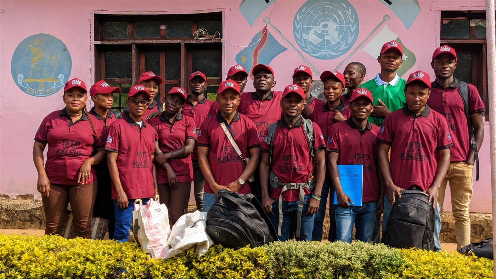

L'ISTD Kalehe adopte fièrement le système Licence-Maîtrise-Doctorat (LMD), un cadre pédagogique moderne et harmonisé.
Des diplômes reconnus et valorisés partout dans le monde, facilitant les études supérieures et la carrière à l'étranger.
Un parcours académique adaptable, avec des unités d'enseignement capitalisables et transférables.
Des programmes axés sur les compétences pratiques et l'employabilité, en collaboration avec le monde professionnel.
« Formant des Ingénieurs Agronomes professionnels de la production agricole moderne ! »

« Cette filière pluridisciplinaire vous prépare à devenir des acteurs du changement dans divers domaines. Formez-vous aujourd'hui pour transformer demain ! »
Étudiez les défis environnementaux, la gestion des ressources naturelles et les stratégies de développement respectueuses de l'écosystème.
Acquérez les compétences nécessaires pour diriger, gérer et innover dans le monde des affaires. Du marketing à la finance, devenez un leader capable de créer de la valeur et des emplois.
Comprenez les dynamiques sociales, les politiques publiques et la gestion des projets communautaires. Œuvrez pour le bien-être social et le renforcement des structures associatives.
Formant des experts en gestion agricole moderne, cette filière est cruciale pour la sécurité alimentaire et l'innovation dans le secteur primaire.
Les candidats détenteurs du diplôme de graduat de l'ancien système qui souhaitent s'inscrire au deuxième cycle dans le nouveau système LMD sont aussi les bienvenus, mais pourront avoir quelques cours complémentaires.